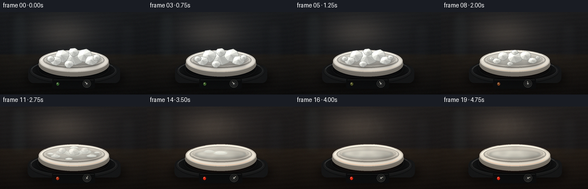
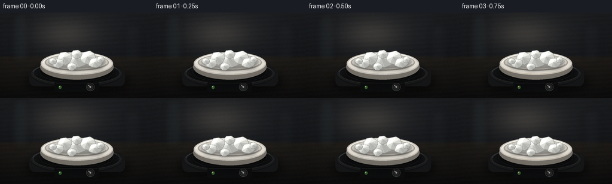
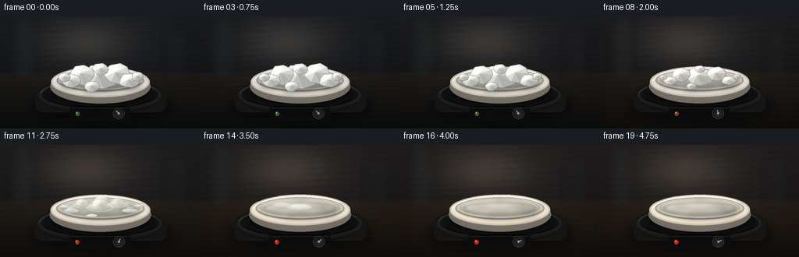

CODING AGENTS AS PIXEL WORLD MODELS
traex/DeepSeek-V4.1-Flash · phygen_119
点击播放 · 原生 RGB 像素
此结果可播放，但该运行尚未通过最终提交审核。页面展示不代表评测通过。
逐轮保存的候选
回放视频、检查图与代码变化。
每份候选均可单独播放。实际图片检查记录在下方工具轨迹中。
候选 01播放与检查图
点击播放 · 原生 RGB 像素


展开代码变化
--- 上一保存版本
+++ 本次保存版本
@@ -0,0 +1,547 @@
+from __future__ import annotations
+
+import math
+from pathlib import Path
+
+import numpy as np
+from PIL import Image, ImageDraw, ImageFilter
+
+import artifact_io
+
+
+CASE_DIR = Path(__file__).resolve().parent
+WIDTH = 256
+HEIGHT = 144
+FRAMES = 20
+FPS = 4.0
+SS = 4
+W = WIDTH * SS
+H = HEIGHT * SS
+
+
+def smoothstep(edge0: float, edge1: float, value: float) -> float:
+ if edge0 == edge1:
+ return float(value >= edge1)
+ t = min(1.0, max(0.0, (value - edge0) / (edge1 - edge0)))
+ return t * t * (3.0 - 2.0 * t)
+
+
+def ease(value: float) -> float:
+ value = min(1.0, max(0.0, value))
+ return 0.5 - 0.5 * math.cos(math.pi * value)
+
+
+def pxy(x: float, y: float) -> tuple[int, int]:
+ return int(round(x * SS)), int(round(y * SS))
+
+
+def box(x0: float, y0: float, x1: float, y1: float) -> tuple[int, int, int, int]:
+ return pxy(x0, y0) + pxy(x1, y1)
+
+
+def draw_ellipse(
+ draw: ImageDraw.ImageDraw,
+ x0: float,
+ y0: float,
+ x1: float,
+ y1: float,
+ fill=None,
+ outline=None,
+ width: float = 1.0,
+) -> None:
+ draw.ellipse(
+ box(x0, y0, x1, y1),
+ fill=fill,
+ outline=outline,
+ width=max(1, int(round(width * SS))),
+ )
+
+
+def draw_polygon(draw: ImageDraw.ImageDraw, points, fill=None, outline=None, width: float = 1.0) -> None:
+ draw.polygon(
+ [pxy(x, y) for x, y in points],
+ fill=fill,
+ outline=outline,
+ width=max(1, int(round(width * SS))),
+ )
+
+
+def make_background(heat: float) -> Image.Image:
+ yy, xx = np.mgrid[0:H, 0:W].astype(np.float32)
+ xn = xx / W
+ yn = yy / H
+
+ wall_top = np.array([37.0, 39.0, 42.0], dtype=np.float32)
+ wall_bottom = np.array([22.0, 24.0, 27.0], dtype=np.float32)
+ wall_mix = np.clip(yn / 0.61, 0.0, 1.0)[..., None]
+ image = wall_top * (1.0 - wall_mix) + wall_bottom * wall_mix
+
+ key = np.exp(-(((xn - 0.43) / 0.30) ** 2 + ((yn - 0.33) / 0.25) ** 2) * 2.2)
+ image += key[..., None] * np.array([31.0, 27.0, 22.0], dtype=np.float32)
+
+ table_mask = np.clip((yn - 0.555) / 0.025, 0.0, 1.0)
+ table = (
+ np.array([34.0, 31.0, 27.0], dtype=np.float32) * (1.0 - np.clip((yn - 0.56) / 0.44, 0, 1)[..., None])
+ + np.array([15.0, 15.0, 15.0], dtype=np.float32) * np.clip((yn - 0.56) / 0.44, 0, 1)[..., None]
+ )
+ image = image * (1.0 - table_mask[..., None]) + table * table_mask[..., None]
+
+ rng = np.random.default_rng(7)
+ fine = rng.normal(0.0, 2.2, (H, W, 1)).astype(np.float32)
+ image += fine
+ image += (np.sin(yy * 0.23 + xx * 0.011) * 1.2)[..., None]
+ image += np.array([7.0 * heat, 2.8 * heat, 0.2 * heat], dtype=np.float32)
+ return Image.fromarray(np.clip(image, 0, 255).astype(np.uint8), "RGB")
+
+
+def add_background_shapes(image: Image.Image, heat: float) -> Image.Image:
+ layer = Image.new("RGBA", (W, H), (0, 0, 0, 0))
+ draw = ImageDraw.Draw(layer, "RGBA")
+
+ # Defocused glassware gives the macro shot depth without competing with the dish.
+ draw.rounded_rectangle(box(20, 18, 48, 90), radius=10 * SS, fill=(45, 55, 58, 65))
+ draw.rectangle(box(24, 31, 44, 89), fill=(55, 67, 69, 45))
+ draw.ellipse(box(22, 17, 46, 28), fill=(70, 80, 81, 55))
+ draw.rectangle(box(208, 38, 237, 92), fill=(35, 38, 42, 55))
+ draw.ellipse(box(210, 33, 235, 47), fill=(57, 60, 61, 45))
+
+ # A restrained pool of warm spill light from the hotplate.
+ glow = Image.new("RGBA", (W, H), (0, 0, 0, 0))
+ gdraw = ImageDraw.Draw(glow, "RGBA")
+ for i in range(12):
+ radius = (50 + i * 5) * SS
+ alpha = int((2.8 + heat * 2.1) * (1.0 - i / 13.0))
+ gdraw.ellipse(
+ (W // 2 - radius, int(100 * SS) - radius * 0.46, W // 2 + radius, int(100 * SS) + radius * 0.46),
+ fill=(255, 104, 28, alpha),
+ )
+ glow = glow.filter(ImageFilter.GaussianBlur(13 * SS))
+ layer = Image.alpha_composite(layer, glow)
+ layer = layer.filter(ImageFilter.GaussianBlur(5.5 * SS))
+ return Image.alpha_composite(image.convert("RGBA"), layer).convert("RGB")
+
+
+def draw_hotplate(image: Image.Image, heat: float, progress: float) -> Image.Image:
+ # Contact shadow.
+ shadow = Image.new("RGBA", (W, H), (0, 0, 0, 0))
+ sd = ImageDraw.Draw(shadow, "RGBA")
+ draw_ellipse(sd, 42, 101, 218, 137, fill=(0, 0, 0, 170))
+ draw_ellipse(sd, 65, 102, 193, 132, fill=(0, 0, 0, 135))
+ shadow = shadow.filter(ImageFilter.GaussianBlur(8 * SS))
+ image = Image.alpha_composite(image.convert("RGBA"), shadow).convert("RGB")
+
+ draw = ImageDraw.Draw(image, "RGBA")
+ # Dark, slightly rounded instrument body in perspective.
+ draw.rounded_rectangle(box(49, 99, 209, 126), radius=9 * SS, fill=(23, 24, 25, 255))
+ draw_ellipse(draw, 51, 87, 205, 128, fill=(18, 19, 20, 255))
+ draw.ellipse(box(52, 88, 204, 126), fill=(30, 31, 32, 255))
+ draw.ellipse(
+ box(55, 90, 201, 123),
+ fill=(21, 22, 23, 255),
+ outline=(78, 80, 80, 150),
+ width=max(1, int(0.8 * SS)),
+ )
+
+ # Concentric heating rings.
+ for rx, ry, col in [
+ (62, 17.2, (60, 62, 63, 155)),
+ (56, 15.2, (43, 45, 46, 180)),
+ (49, 12.8, (58, 60, 61, 130)),
+ ]:
+ draw_ellipse(draw, 128 - rx, 104 - ry, 128 + rx, 104 + ry, outline=col, width=0.8)
+
+ # Heating element seen around the dish.
+ ring = Image.new("RGBA", (W, H), (0, 0, 0, 0))
+ rd = ImageDraw.Draw(ring, "RGBA")
+ if heat > 0.005:
+ for width, alpha in [(12, 24), (7, 52), (3, 105)]:
+ rd.ellipse(
+ box(128 - 58, 98 - 20, 128 + 58, 98 + 20),
+ outline=(255, 82, 20, int(alpha * heat)),
+ width=int(width * SS),
+ )
+ ring = ring.filter(ImageFilter.GaussianBlur(5 * SS))
+ image = Image.alpha_composite(image.convert("RGBA"), ring).convert("RGB")
+
+ # Front fascia and controls.
+ draw = ImageDraw.Draw(image, "RGBA")
+ draw.rounded_rectangle(box(91, 119, 165, 135), radius=3 * SS, fill=(13, 14, 15, 235))
+ draw.line([pxy(93, 121), pxy(163, 121)], fill=(82, 84, 83, 110), width=1 * SS)
+
+ # Small power lamp.
+ lamp_col = (
+ int(58 + 190 * heat),
+ int(112 - 75 * heat),
+ int(50 - 35 * heat),
+ 235,
+ )
+ draw_ellipse(draw, 98, 125, 103, 130, fill=lamp_col)
+ draw_ellipse(draw, 99.0, 125.8, 100.5, 127.2, fill=(255, 232, 206, 180))
+
+ # Temperature knob rotates clockwise as the plate warms.
+ kx, ky = 151.0, 127.0
+ draw_ellipse(draw, kx - 7, ky - 6, kx + 7, ky + 6, fill=(8, 9, 9, 255), outline=(100, 101, 99, 190), width=0.8)
+ draw_ellipse(draw, kx - 5.5, ky - 4.8, kx + 5.5, ky + 4.8, fill=(39, 40, 40, 255))
+ angle = math.radians(-140 + 118 * ease(progress))
+ x2 = kx + math.cos(angle) * 4.3
+ y2 = ky + math.sin(angle) * 3.8
+ draw.line([pxy(kx, ky), pxy(x2, y2)], fill=(223, 218, 203, 220), width=int(1.0 * SS))
+ draw_ellipse(draw, kx - 1.2, ky - 1.2, kx + 1.2, ky + 1.2, fill=(170, 171, 166, 255))
+
+ # Fine machined highlights.
+ draw.arc(box(54, 89, 202, 124), 187, 337, fill=(119, 120, 118, 90), width=1 * SS)
+ draw.arc(box(58, 93, 198, 120), 12, 166, fill=(5, 5, 5, 130), width=1 * SS)
+ return image
+
+
+def draw_dish(image: Image.Image, progress: float, heat: float) -> Image.Image:
+ # Soft shadow under the ceramic dish.
+ shadow = Image.new("RGBA", (W, H), (0, 0, 0, 0))
+ sd = ImageDraw.Draw(shadow, "RGBA")
+ draw_ellipse(sd, 62, 89, 195, 122, fill=(0, 0, 0, 165))
+ shadow = shadow.filter(ImageFilter.GaussianBlur(5 * SS))
+ image = Image.alpha_composite(image.convert("RGBA"), shadow).convert("RGB")
+
+ draw = ImageDraw.Draw(image, "RGBA")
+ # Porcelain body and outer wall.
+ draw_ellipse(draw, 67, 78, 190, 116, fill=(117, 112, 104, 255))
+ draw_ellipse(draw, 68, 75, 189, 109, fill=(195, 190, 181, 255))
+ draw_ellipse(draw, 70, 77, 187, 107, fill=(223, 218, 208, 255))
+
+ # Inner basin.
+ draw_ellipse(draw, 75, 78, 182, 103, fill=(160, 157, 150, 255))
+ draw_ellipse(draw, 77, 79, 180, 101, fill=(209, 205, 196, 255))
+ draw_ellipse(draw, 80, 80, 177, 99, fill=(188, 185, 177, 255))
+ draw_ellipse(draw, 82, 80.5, 174, 97, fill=(207, 203, 194, 255))
+
+ # Inner wall shading, concentrated on the lower-right.
+ shade = Image.new("RGBA", (W, H), (0, 0, 0, 0))
+ sh = ImageDraw.Draw(shade, "RGBA")
+ draw_ellipse(sh, 94, 86, 174, 102, fill=(70, 67, 63, 75))
+ draw_ellipse(sh, 76, 80, 155, 95, fill=(255, 255, 249, 38))
+ shade = shade.filter(ImageFilter.GaussianBlur(3.5 * SS))
+ image = Image.alpha_composite(image.convert("RGBA"), shade).convert("RGB")
+
+ # Clear liquid pool gradually grows in the basin.
+ liquid = smoothstep(0.18, 0.82, progress)
+ if liquid > 0.001:
+ pool = Image.new("RGBA", (W, H), (0, 0, 0, 0))
+ pd = ImageDraw.Draw(pool, "RGBA")
+ pool_alpha = int(28 + 60 * liquid)
+ draw_ellipse(pd, 84, 84, 172, 96.5, fill=(127, 145, 147, pool_alpha))
+ draw_ellipse(pd, 88, 85, 168, 94.5, fill=(161, 177, 176, int(12 + 22 * liquid)))
+ draw_ellipse(pd, 90, 86, 166, 93, outline=(232, 236, 231, int(22 + 28 * liquid)), width=0.7)
+ pool = pool.filter(ImageFilter.GaussianBlur(1.1 * SS))
+ image = Image.alpha_composite(image.convert("RGBA"), pool).convert("RGB")
+
+ # Warm reflected light on the near rim.
+ draw = ImageDraw.Draw(image, "RGBA")
+ draw.arc(box(71, 76, 186, 108), 183, 329, fill=(249, 247, 238, 210), width=int(1.7 * SS))
+ draw.arc(box(78, 79, 179, 102), 12, 165, fill=(92, 86, 78, 120), width=int(1.2 * SS))
+ if heat > 0.02:
+ draw.arc(
+ box(73, 77, 184, 108),
+ 22,
+ 156,
+ fill=(255, int(164 + 30 * (1 - heat)), 104, int(30 + 60 * heat)),
+ width=int(1.2 * SS),
+ )
+ return image
+
+
+CHUNKS = [
+ (128.0, 86.5, 18.0, 13.0, 1),
+ (108.0, 84.5, 14.0, 10.5, 2),
+ (147.0, 84.0, 15.0, 11.0, 3),
+ (97.0, 92.0, 11.0, 8.0, 4),
+ (159.0, 91.5, 12.0, 8.0, 5),
+ (128.5, 78.5, 10.0, 7.0, 6),
+ (120.0, 96.5, 9.0, 6.2, 7),
+ (88.0, 88.5, 7.2, 5.5, 8),
+ (168.0, 86.5, 7.5, 5.2, 9),
+]
+
+
+def crystal_vertices(cx, cy, rx, ry, seed, squeeze_x, squeeze_y):
+ rng = np.random.default_rng(seed)
+ count = 9
+ points = []
+ for i in range(count):
+ angle = 2.0 * math.pi * i / count + rng.uniform(-0.10, 0.10)
+ radial = rng.uniform(0.83, 1.04)
+ x = cx + math.cos(angle) * rx * radial * squeeze_x
+ y = cy + math.sin(angle) * ry * radial * squeeze_y
+ points.append((x, y))
+ return points
+
+
+def draw_crystals(image: Image.Image, progress: float) -> Image.Image:
+ # Ground shadows keep the faceted solids anchored in the dish.
+ shadow = Image.new("RGBA", (W, H), (0, 0, 0, 0))
+ sd = ImageDraw.Draw(shadow, "RGBA")
+ for cx, cy, rx, ry, seed in CHUNKS:
+ local = smoothstep(0.08, 0.82, progress + (seed - 5) * 0.012)
+ scale = 1.0 - 0.46 * local
+ draw_ellipse(
+ sd,
+ cx - rx * 1.05 * scale,
+ cy + ry * 0.34,
+ cx + rx * 1.05 * scale,
+ cy + ry * 1.05 * scale,
+ fill=(44, 42, 39, int(82 - 35 * local)),
+ )
+ shadow = shadow.filter(ImageFilter.GaussianBlur(2.8 * SS))
+ image = Image.alpha_composite(image.convert("RGBA"), shadow).convert("RGB")
+
+ draw = ImageDraw.Draw(image, "RGBA")
+ for cx, cy, rx, ry, seed in CHUNKS:
+ local = smoothstep(0.06, 0.84, progress + (seed - 5) * 0.018)
+ sx = 1.0 - 0.68 * local
+ sy = 1.0 - 0.84 * local
+ if local > 0.90 and seed not in (2, 6):
+ continue
+ alpha = int(250 * (1.0 - smoothstep(0.78, 1.0, local)))
+ alpha = max(0, alpha)
+ if alpha == 0:
+ continue
+
+ # Melted camphor becomes a low, rounded, glossy bead.
+ blob = smoothstep(0.42, 0.86, local)
+ if blob > 0.02:
+ bw = rx * (0.42 + 0.58 * sx)
+ bh = ry * (0.20 + 0.80 * sy)
+ draw_ellipse(
+ draw,
+ cx - bw,
+ cy - bh * 0.10,
+ cx + bw,
+ cy + bh * 0.82,
+ fill=(216, 222, 218, int(alpha * blob * 0.92)),
+ )
+ draw_ellipse(
+ draw,
+ cx - bw * 0.78,
+ cy - bh * 0.02,
+ cx + bw * 0.62,
+ cy + bh * 0.50,
+ fill=(238, 241, 236, int(alpha * blob * 0.50)),
+ )
+ draw.arc(
+ box(cx - bw * 0.78, cy - bh * 0.08, cx + bw * 0.80, cy + bh * 0.72),
+ 198,
+ 334,
+ fill=(255, 255, 250, int(alpha * blob * 0.78)),
+ width=int(0.9 * SS),
+ )
+
+ # Faceted crystalline phase fades as the rounded bead takes over.
+ facet_alpha = int(alpha * (1.0 - 0.94 * blob))
+ if facet_alpha > 2:
+ points = crystal_vertices(cx, cy, rx, ry, seed, sx, sy)
+ center = (cx - rx * 0.12 * sx, cy - ry * 0.18 * sy)
+ count = len(points)
+ for i in range(count):
+ p0 = points[i]
+ p1 = points[(i + 1) % count]
+ mx = (p0[0] + p1[0]) * 0.5
+ my = (p0[1] + p1[1]) * 0.5
+ nx = (mx - cx) / max(rx * sx, 0.1)
+ ny = (my - cy) / max(ry * sy, 0.1)
+ light = 0.62 - 0.25 * nx - 0.34 * ny
+ base = np.array([226.0, 227.0, 221.0])
+ color = np.clip(base * (0.67 + 0.47 * light), 102, 255).astype(int)
+ draw_polygon(
+ draw,
+ [center, p0, p1],
+ fill=(int(color[0]), int(color[1]), int(color[2]), facet_alpha),
+ )
+ draw_polygon(
+ draw,
+ points,
+ outline=(104, 108, 105, int(facet_alpha * 0.52)),
+ width=0.65,
+ )
+
+ # A few narrow internal planes make the solid read as a crystal.
+ for idx in (1, 4, 7):
+ p = points[idx % count]
+ draw.line(
+ [pxy(center[0], center[1]), pxy(p[0] * 0.96 + center[0] * 0.04, p[1] * 0.96 + center[1] * 0.04)],
+ fill=(92, 98, 96, int(facet_alpha * 0.28)),
+ width=max(1, int(0.45 * SS)),
+ )
+
+ # Hard specular sliver on the light-facing facet.
+ gx = cx - rx * 0.36 * sx
+ gy = cy - ry * 0.55 * sy
+ draw.line(
+ [pxy(gx, gy + 1.2 * sy), pxy(gx + rx * 0.28 * sx, gy - ry * 0.24 * sy)],
+ fill=(255, 255, 250, int(facet_alpha * 0.92)),
+ width=max(1, int(0.72 * SS)),
+ )
+
+ return image
+
+
+def add_vapor(image: Image.Image, progress: float, frame_index: int) -> Image.Image:
+ vapor = smoothstep(0.40, 0.78, progress)
+ if vapor <= 0.001:
+ return image
+ layer = Image.new("RGBA", (W, H), (0, 0, 0, 0))
+ draw = ImageDraw.Draw(layer, "RGBA")
+ plumes = [
+ (112.0, 81.0, 0.0, 0.40),
+ (127.0, 78.0, 1.7, 0.52),
+ (143.0, 81.0, 3.1, 0.42),
+ (154.0, 85.0, 4.5, 0.34),
+ (101.0, 86.0, 5.2, 0.28),
+ ]
+ phase = frame_index * 0.47
+ for sx0, sy0, offset, strength in plumes:
+ steps = 24
+ for i in range(steps):
+ q = i / (steps - 1)
+ y = sy0 - 54.0 * q
+ x = sx0 + math.sin(q * 7.2 + phase + offset) * (1.0 + 4.5 * q)
+ x += math.sin(q * 13.0 - phase * 0.55 + offset * 2.0) * 1.4 * q
+ x += (q * q) * (2.8 if offset > 2.0 else -1.7)
+ radius = 0.75 + q * 2.55
+ fade = math.sin(math.pi * min(1.0, q * 1.10)) ** 0.65
+ alpha = int(26 * vapor * strength * fade)
+ draw_ellipse(
+ draw,
+ x - radius,
+ y - radius * 0.72,
+ x + radius,
+ y + radius * 0.72,
+ fill=(213, 219, 215, alpha),
+ )
+ layer = layer.filter(ImageFilter.GaussianBlur(2.6 * SS))
+ return Image.alpha_composite(image.convert("RGBA"), layer).convert("RGB")
+
+
+def add_hot_air_haze(image: Image.Image, progress: float, frame_index: int) -> Image.Image:
+ heat = smoothstep(0.28, 0.85, progress)
+ if heat <= 0.01:
+ return image
+ # A very small screen-space displacement above the dish suggests rising hot air.
+ arr = np.asarray(image, dtype=np.uint8).copy()
+ y0, y1 = int(27 * SS), int(91 * SS)
+ x0, x1 = int(79 * SS), int(177 * SS)
+ region = arr[y0:y1, x0:x1]
+ yy, xx = np.mgrid[y0:y1, x0:x1].astype(np.float32)
+ amp = (0.45 + 0.55 * heat) * SS * 0.34
+ dx = np.sin((yy - y0) * 0.048 / SS + frame_index * 0.75) * amp
+ dy = np.cos((xx - x0) * 0.036 / SS - frame_index * 0.62) * amp * 0.55
+ map_x = np.clip(xx + dx, 0, W - 1).astype(np.float32)
+ map_y = np.clip(yy + dy, 0, H - 1).astype(np.float32)
+ xs = np.clip(map_x.astype(np.int32), 0, W - 1)
+ ys = np.clip(map_y.astype(np.int32), 0, H - 1)
+ arr[y0:y1, x0:x1] = arr[ys, xs]
+ return Image.fromarray(arr, "RGB")
+
+
+def finish_frame(image: Image.Image, progress: float, frame_index: int) -> Image.Image:
+ # Slight push-in across the timelapse, then high-quality downsample.
+ zoom = 1.0 + 0.018 * ease(progress)
+ crop_w = W / zoom
+ crop_h = H / zoom
+ cx = 128.0 * SS
+ cy = 88.0 * SS
+ crop = (
+ int(round(cx - crop_w / 2)),
+ int(round(cy - crop_h / 2)),
+ int(round(cx + crop_w / 2)),
+ int(round(cy + crop_h / 2)),
+ )
+ crop = (
+ max(0, crop[0]),
+ max(0, crop[1]),
+ min(W, crop[2]),
+ min(H, crop[3]),
+ )
+ image = image.crop(crop).resize((WIDTH, HEIGHT), Image.Resampling.LANCZOS)
+ arr = np.asarray(image, dtype=np.float32)
+
+ # Gentle bloom from the bright porcelain and heated element.
+ lum = arr.max(axis=2)
+ bright = np.clip((lum - 194.0) / 61.0, 0.0, 1.0)
+ bloom_src = (arr * bright[..., None]).astype(np.uint8)
+ bloom = np.asarray(
+ Image.fromarray(bloom_src, "RGB").filter(ImageFilter.GaussianBlur(2.2)),
+ dtype=np.float32,
+ )
+ arr += bloom * (0.10 + 0.08 * smoothstep(0.25, 0.9, progress))
+
+ # Lens vignette and a restrained warm grade as the plate heats.
+ yy, xx = np.mgrid[0:HEIGHT, 0:WIDTH].astype(np.float32)
+ nx = (xx - WIDTH * 0.5) / (WIDTH * 0.5)
+ ny = (yy - HEIGHT * 0.52) / (HEIGHT * 0.55)
+ radial = np.sqrt(nx * nx + ny * ny)
+ vignette = np.clip(1.0 - 0.24 * np.clip((radial - 0.25) / 0.95, 0, 1) ** 1.5, 0.76, 1.0)
+ arr *= vignette[..., None]
+ warm = smoothstep(0.12, 0.92, progress)
+ arr[..., 0] *= 1.0 + 0.025 * warm
+ arr[..., 1] *= 1.0 + 0.008 * warm
+ arr[..., 2] *= 1.0 - 0.020 * warm
+
+ rng = np.random.default_rng(1000 + frame_index)
+ arr += rng.normal(0.0, 0.72, arr.shape).astype(np.float32)
+ return Image.fromarray(np.clip(arr, 0, 255).astype(np.uint8), "RGB")
+
+
+def render_frame(frame_index: int) -> np.ndarray:
+ progress = frame_index / (FRAMES - 1)
+ heat = smoothstep(0.06, 0.82, progress)
+
+ image = make_background(heat)
+ image = add_background_shapes(image, heat)
+ image = draw_hotplate(image, heat, progress)
+ image = draw_dish(image, progress, heat)
+ image = draw_crystals(image, progress)
+ image = add_vapor(image, progress, frame_index)
+ image = add_hot_air_haze(image, progress, frame_index)
+ image = finish_frame(image, progress, frame_index)
+ return np.asarray(image, dtype=np.uint8)
+
+
+def save_video(frames: np.ndarray, path: Path) -> None:
+ try:
+ import cv2
+
+ writer = cv2.VideoWriter(
+ str(path),
+ cv2.VideoWriter_fourcc(*"mp4v"),
+ FPS,
+ (WIDTH, HEIGHT),
+ )
+ if writer.isOpened():
+ for frame in frames:
+ writer.write(frame[:, :, ::-1])
+ writer.release()
+ return
+ writer.release()
+ except Exception:
+ pass
+
+ # Portable fallback for environments without an MP4 encoder.
+ images = [Image.fromarray(frame) for frame in frames]
+ images[0].save(
+ path.with_suffix(".gif"),
+ save_all=True,
+ append_images=images[1:],
+ duration=round(1000 / FPS),
+ loop=0,
+ optimize=False,
+ )
+
+
+def main() -> None:
+ frames = np.stack([render_frame(i) for i in range(FRAMES)], axis=0)
+ artifact_io.save(frames, CASE_DIR)
+ save_video(frames, CASE_DIR / "camphor_heat_timelapse.mp4")
+ print(f"rendered {len(frames)} frames -> {CASE_DIR / 'camphor_heat_timelapse.mp4'}")
+
+
+if __name__ == "__main__":
+ main()
候选 02播放与检查图
点击播放 · 原生 RGB 像素
展开代码变化
--- 上一保存版本
+++ 本次保存版本
@@ -250,15 +250,15 @@
CHUNKS = [
- (128.0, 86.5, 18.0, 13.0, 1),
- (108.0, 84.5, 14.0, 10.5, 2),
- (147.0, 84.0, 15.0, 11.0, 3),
- (97.0, 92.0, 11.0, 8.0, 4),
- (159.0, 91.5, 12.0, 8.0, 5),
- (128.5, 78.5, 10.0, 7.0, 6),
- (120.0, 96.5, 9.0, 6.2, 7),
- (88.0, 88.5, 7.2, 5.5, 8),
- (168.0, 86.5, 7.5, 5.2, 9),
+ (128.0, 86.5, 22.0, 15.0, 1),
+ (106.0, 84.5, 17.0, 12.0, 2),
+ (149.0, 83.5, 18.0, 12.5, 3),
+ (93.0, 91.0, 12.5, 8.5, 4),
+ (164.0, 91.0, 13.5, 8.5, 5),
+ (129.0, 78.0, 11.0, 7.2, 6),
+ (118.0, 97.0, 10.0, 6.5, 7),
+ (84.0, 87.0, 8.0, 5.8, 8),
+ (174.0, 86.0, 8.2, 5.5, 9),
]
@@ -443,7 +443,7 @@
def finish_frame(image: Image.Image, progress: float, frame_index: int) -> Image.Image:
# Slight push-in across the timelapse, then high-quality downsample.
- zoom = 1.0 + 0.018 * ease(progress)
+ zoom = 1.045 + 0.022 * ease(progress)
crop_w = W / zoom
crop_h = H / zoom
cx = 128.0 * SS
候选 03播放与检查图

候选 04播放与检查图
点击播放 · 原生 RGB 像素

展开代码变化
--- 上一保存版本
+++ 本次保存版本
@@ -91,7 +91,7 @@
image += fine
image += (np.sin(yy * 0.23 + xx * 0.011) * 1.2)[..., None]
image += np.array([7.0 * heat, 2.8 * heat, 0.2 * heat], dtype=np.float32)
- return Image.fromarray(np.clip(image, 0, 255).astype(np.uint8), "RGB")
+ return Image.fromarray(np.clip(image, 0, 255).astype(np.uint8))
def add_background_shapes(image: Image.Image, heat: float) -> Image.Image:
@@ -438,7 +438,7 @@
xs = np.clip(map_x.astype(np.int32), 0, W - 1)
ys = np.clip(map_y.astype(np.int32), 0, H - 1)
arr[y0:y1, x0:x1] = arr[ys, xs]
- return Image.fromarray(arr, "RGB")
+ return Image.fromarray(arr)
def finish_frame(image: Image.Image, progress: float, frame_index: int) -> Image.Image:
@@ -468,7 +468,7 @@
bright = np.clip((lum - 194.0) / 61.0, 0.0, 1.0)
bloom_src = (arr * bright[..., None]).astype(np.uint8)
bloom = np.asarray(
- Image.fromarray(bloom_src, "RGB").filter(ImageFilter.GaussianBlur(2.2)),
+ Image.fromarray(bloom_src).filter(ImageFilter.GaussianBlur(2.2)),
dtype=np.float32,
)
arr += bloom * (0.10 + 0.08 * smoothstep(0.25, 0.9, progress))
@@ -487,7 +487,7 @@
rng = np.random.default_rng(1000 + frame_index)
arr += rng.normal(0.0, 0.72, arr.shape).astype(np.float32)
- return Image.fromarray(np.clip(arr, 0, 255).astype(np.uint8), "RGB")
+ return Image.fromarray(np.clip(arr, 0, 255).astype(np.uint8))
def render_frame(frame_index: int) -> np.ndarray:
可观测工具轨迹
实际执行的命令与返回图片。
命令 1exit 0
/bin/bash -c "sed -n '1,240p' prompt.txt"
命令 2exit 0
/bin/bash -c "sed -n '1,280p' GENERATION_RULES.md"
命令 3exit 0
/bin/bash -c 'cat task_spec.json'
命令 4exit 0
/bin/bash -c "printf '%s\\n' 'FILES'; rg --files -g '"'!*.mp4'"' -g '"'!*.mov'"' -g '"'!*.webm'"' | sed -n '1,240p'; printf '%s\\n' 'TOOLS'; command -v ffmpeg; command -v python3; command -v blender; command -v convert; command -v magick; command -v node"
命令 5exit 0
/bin/bash -c "sed -n '1,260p' artifact_io.py"
命令 6exit 0
/bin/bash -c "sed -n '1,260p' player_template.html"
命令 7exit 0
/bin/bash -c "python3 - <<'PY' import importlib.util for m in ['numpy','PIL','scipy','cv2','imageio','matplotlib']: print(m, bool(importlib.util.find_spec(m))) PY"
命令 8exit 1
/bin/bash -c 'python3 generate.py'
命令 9exit 1
/bin/bash -c 'python3 generate.py'
命令 10exit 1
/bin/bash -c 'python3 generate.py'
命令 11exit 1
/bin/bash -c 'python3 generate.py'
命令 12exit 0
/bin/bash -c 'rg -n "width=[''^0-9]|width=.*'"\\* SS\" generate.py"
命令 13exit 0
/bin/bash -c 'python3 generate.py'
命令 14exit 0
/bin/bash -c "python3 - <<'PY'
from PIL import Image
import numpy as np, os
for i in [0,4,9,14,19]:
im=Image.open(f'frames/{i:02d}.png').convert('RGB').resize((64,36))
a=np.asarray(im).astype(float)
lum=a.mean(2)
chars=' .:-=+*#%@'
print('\\nFRAME',i,'mean',round(a.mean(),1),'std',round(a.std(),1),'warm',round((a[:,:,0]-a[:,:,2]).mean(),1))
for row in lum[::2]:
print(''.join(chars[min(9,int(v/256*10))] for v in row))
PY"命令 15exit 0
/bin/bash -c 'command -v chafa; command -v viu; command -v img2txt; command -v jp2; command -v ffmpeg; command -v ffprobe; command -v python3'
命令 16exit 0
/bin/bash -c "python3 - <<'PY'
from PIL import Image
import numpy as np
from pathlib import Path
for name in ['inspection.png','transition_check.png','frames/00.png','frames/19.png','camphor_heat_timelapse.mp4']:
p=Path(name); print(name,p.stat().st_size if p.exists() else 'MISSING')
a=np.stack([np.asarray(Image.open(f'frames/{i:02d}.png').convert('RGB'),dtype=np.int16) for i in range(20)])
d=np.abs(np.diff(a,axis=0)).mean((1,2,3))
print('adjacent frame mean abs diffs:', np.round(d,2).tolist())
print('overall change 0->19:', float(np.abs(a[-1]-a[0]).mean()))
print('dark pixels',float((a.mean(-1)<20).mean()),'bright',float((a.mean(-1)>180).mean()))
PY"命令 17exit 1
/bin/bash -c "python3 - <<'PY'
from PIL import Image
im=Image.open('inspection.png')
print(im.size)
# Downsample only enough to inspect structure while keeping the original artifact untouched.
im.resize((1024, 330)).save('/tmp/camphor_inspection_1024.png')
PY"命令 18exit 0
/bin/bash -c "python3 - <<'PY'
from PIL import Image
import numpy as np
for idx in [0,9,19]:
im=Image.open(f'frames/{idx:02d}.png').convert('RGB')
a=np.asarray(im)
# Report the key material regions rather than relying on the contact sheet text.
print('frame',idx)
for name,(x0,y0,x1,y1) in {'dish':(70,78,188,110),'crystal':(84,78,172,101),'hotplate':(52,91,204,124),'vapor':(90,40,168,84)}.items():
q=a[y0:y1,x0:x1]
print(' ',name,'mean',np.round(q.mean((0,1)),1),'p95',np.round(np.percentile(q,95,axis=(0,1)),1),'std',round(float(q.std()),1))
PY"命令 19exit 0
/bin/bash -c 'python3 generate.py'
命令 20exit 0
/bin/bash -c "python3 - <<'PY'
from pathlib import Path
import json, cv2, numpy as np
from PIL import Image
spec=json.loads(Path('task_spec.json').read_text())
frames=sorted(Path('frames').glob('*.png'))
print('png_frames',len(frames))
print('png_shapes',sorted({Image.open(p).size for p in frames}))
cap=cv2.VideoCapture('camphor_heat_timelapse.mp4')
print('mp4_open',cap.isOpened(),'width',int(cap.get(cv2.CAP_PROP_FRAME_WIDTH)),'height',int(cap.get(cv2.CAP_PROP_FRAME_HEIGHT)),'fps',cap.get(cv2.CAP_PROP_FPS),'frames',int(cap.get(cv2.CAP_PROP_FRAME_COUNT)))
ok=True; vals=[]
while True:
ok2,fr=cap.read()
if not ok2: break
vals.append(float(fr.mean()))
cap.release()
print('decoded_frames',len(vals),'mean_luma_range',round(min(vals),2),round(max(vals),2))
print('spec',spec)
print('artifacts',{p.name:p.stat().st_size for p in [Path('pixels.npz'),Path('index.html'),Path('inspection.png'),Path('camphor_heat_timelapse.mp4')]})
PY"命令 21exit 0
/bin/bash -c "python3 - <<'PY'
from pathlib import Path
from PIL import Image
import numpy as np
frames=np.stack([np.asarray(Image.open(p).convert('RGB'),dtype=np.float32) for p in sorted(Path('frames').glob('*.png'))])
# Material-specific checks in stable image-space regions.
checks={
'crystal_light_pixels':((frames[...,0]>180)&(frames[...,1]>180)&(frames[...,2]>170))[...,78:104,84:174].mean((1,2)),
'warm_pixels':((frames[...,0]-frames[...,2])>18)[...,60:110,55:205].mean((1,2)),
'upper_vapor_brightness':frames[...,40:78,90:168].mean((1,2,3)),
}
for k,v in checks.items(): print(k,np.round(v[[0,4,9,14,19]],4).tolist())
print('adjacent_diff',np.round(np.abs(np.diff(frames,axis=0)).mean((1,2,3)),2).tolist())
PY"命令 22exit 0
/bin/bash -c "python3 - <<'PY'
from PIL import Image
import numpy as np
for idx in [0,19]:
a=np.asarray(Image.open(f'frames/{idx:02d}.png').convert('RGB')).astype(int)
print('frame',idx)
# Print compact block averages of the region containing the camphor and upper air.
for y in range(36,108,6):
s=[]
for x in range(72,186,8):
q=a[y:y+6,x:x+8].mean((0,1)); s.append(f'{int(q.mean()):3d}')
print(' '.join(s))
PY"命令 23exit 0
/bin/bash -c "python3 - <<'PY'
from pathlib import Path
import hashlib, json
from PIL import Image
import numpy as np
frames=[np.asarray(Image.open(p).convert('RGB')) for p in sorted(Path('frames').glob('*.png'))]
a=np.stack(frames)
z=np.load('pixels.npz')['pixels']
recon=np.stack([(z[:,:,i]>>16)&255 for i in range(20)],axis=-1) # only a sanity read, not an RGB comparison
print('unique_frames',len({hashlib.sha256(f.tobytes()).hexdigest() for f in frames}))
print('shape',a.shape,'dtype',a.dtype)
print('file_inventory')
for p in sorted(Path('.').glob('*')):
if p.is_file(): print(p.name,p.stat().st_size)
PY"命令 24exit 0
/bin/bash -c 'rg -n "Image.fromarray" generate.py'
命令 25exit 0
/bin/bash -c "python3 generate.py && python3 - <<'PY'
import json, cv2
from pathlib import Path
from PIL import Image
spec=json.loads(Path('task_spec.json').read_text())
frames=sorted(Path('frames').glob('*.png'))
assert len(frames)==spec['frames']
assert all(Image.open(p).size==(spec['width'],spec['height']) for p in frames)
cap=cv2.VideoCapture('camphor_heat_timelapse.mp4')
assert cap.isOpened()
assert int(cap.get(cv2.CAP_PROP_FRAME_COUNT))==spec['frames']
assert int(cap.get(cv2.CAP_PROP_FRAME_WIDTH))==spec['width']
assert int(cap.get(cv2.CAP_PROP_FRAME_HEIGHT))==spec['height']
assert abs(cap.get(cv2.CAP_PROP_FPS)-spec['fps'])<0.01
cap.release()
assert Path('pixels.npz').is_file() and Path('index.html').is_file()
print('FINAL VALIDATION PASSED: 20 frames, 256x144, 4 fps')
PY"保存候选 4 份；完成命令 25 次；可验证图片返回 0 张。原始 API 响应与完整日志保留在本地。